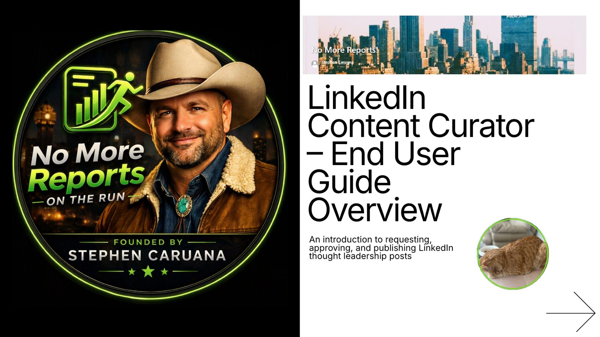
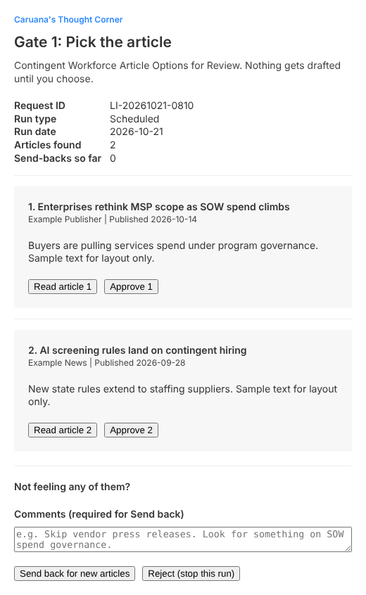
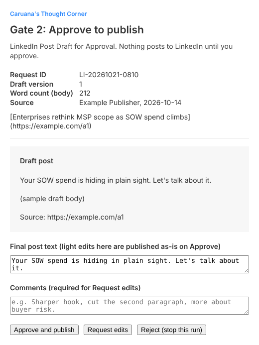
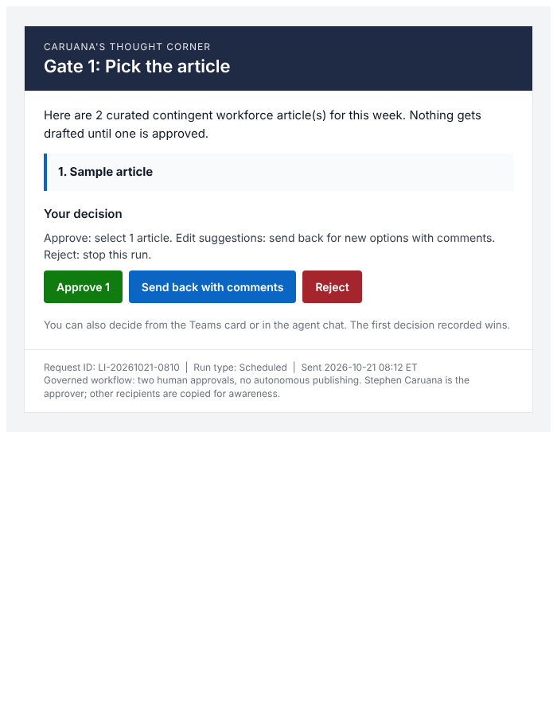
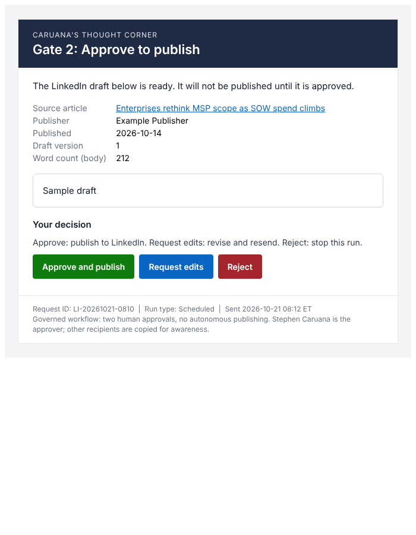
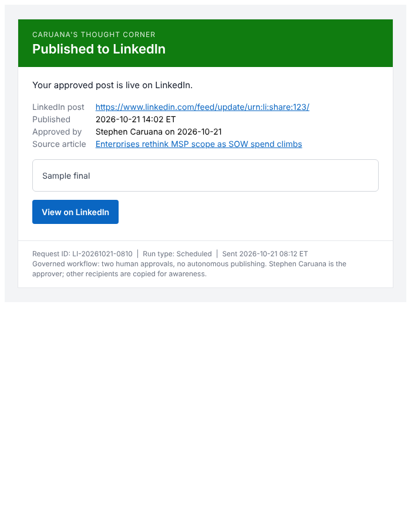
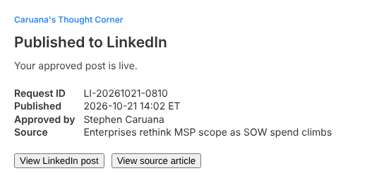
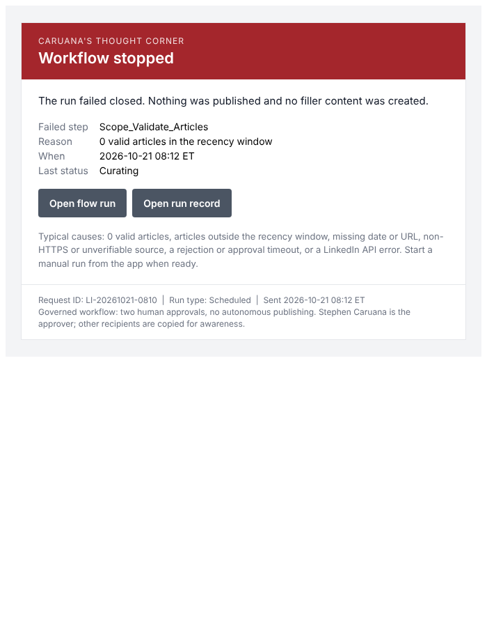
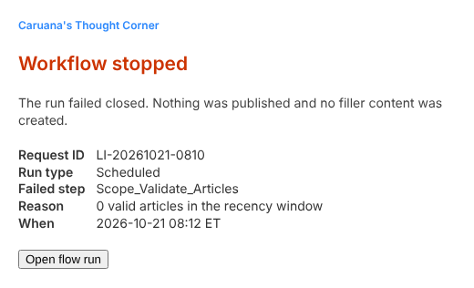

AI finds the news. A human says yes. Then it posts.
A governed LinkedIn content workflow for the contingent workforce industry. It curates credible, recent articles, drafts a thought leadership post in Stephen Caruana's voice, and publishes only after two explicit approvals.
The app opens in Microsoft Power Apps. Sign in with your work account and choose LinkedIn Content Approvals. Only approved users can open it.

Six steps, two human gates
Runs weekly on a schedule or on demand. Every step is logged to SharePoint, so each post has a full audit trail from source article to live link.
Start a run
Weekly schedule or a manual request from the Start a Run app, with an optional topic focus.
Curate articles
A Copilot Studio News Curator agent returns one to three credible articles from this month or last, each with title, publisher, date, summary, and link.
Pick the article
Approve 1, 2, or 3, send back for new options with comments, or reject to stop the run.
Draft the post
150 to 250 words in Stephen's voice: direct, executive, non-promotional, with the source link and disclaimer footers.
Approve to publish
Approve and publish, request edits with comments, or reject. Light edits on the card are published as written.
Publish and confirm
Posts to LinkedIn, then sends a confirmation with the live post link and timestamp.
Decide from wherever you are
Both gates can be answered from any of these channels. The first decision recorded wins, so nothing is approved twice.
What the approver sees
Rendered with sample data. Click any preview to open it full size.
















Non-negotiables
The rules the agent and the workflow enforce on every run.
- No fabricated sources. One to three real articles, never padded to hit a number.
- Strict recency. Published this month or last month, or the article is dropped.
- Complete records. Every article carries a title, publisher, date, summary, and direct link.
- Two approvals. Nothing drafts before Gate 1 and nothing posts before Gate 2.
- Fail loudly. No valid articles means an alert goes out and the run stops.
- Disclosed AI. Every post ends with a generative AI disclaimer and a forward-looking statement.
The full playbook, 36 pages
Starting runs, making gate decisions, checking drafts, reading the Power BI dashboard, and responding to alerts.